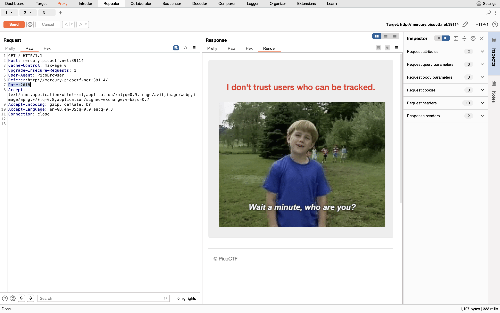

📢Who are you?
Let me in. Let me iiiiiiinnnnnnnnnnnnnnnnnnnn
http://mercury.picoctf.net:39114/🚨Hint
➡️It ain't much, but it's an RFC.
🏷Request For Comments (RFC) is a series of documents that define the standards ,protocols,procedure and related information used in the development and operation of the internet and it's technology.
In computer Networks there is a RFC model also there just like TCP/IP.
Example:RFC 2616 Tells about the HTTP/1.1 protocol and RFC 791, titled "Internet Protocol which outlines the specifications for the Internet Protocol (IP).
🏷Oh!! It show's that this site only takes the request of the client who use's the official PicoBrowser Only or In other words those who requested the server throught the official PicoBrowser Only it takes otherwise it Drops.
🔗Now I think this challenge totally depends on the Manipulation of Http or Https headers.
🏷Manipulation of the Request Http header We can use so many tool's.But now I am using Brup suite.
🏷So let's find how the server know's the requested user Browser
🏷Here One Http header come's into picture .User-agent http header Tells the client what type of browser is using and that browser from which device he was using and version of 'OS' of the device
🛠️Just manipulate the User-agent http header
User-agent:PicoBrowser🏷Here the Server again not trust and again don't take request from the client who are visiting from the another site
🏷Again same question How the server knows?
🏷Here Again one Http Header come's into picture .Http header that tells a server from which site a user is entering is called the referer header.
🛠️Just manipulate the Referer http header
Referer:http://mercury.picoctf.net:39114/🏷Now Again there is a problem like the is only worked at the time 2018 .So the site stops taking request after 2018
🏷So user Date Http header to solve this problem.Most importantly,the Date header acts like a time stamp It contains the data and time at which the message was generated by the Server.
🛠️Just manipulate the Date http header
Date:2018 🏷Next Problem is User who are requesting server are not tracked by trageted site or present site.
🏷Now DNT Http header we have to manipulate .Present DNT is not using due some technical issues .
🏷Do Not Track(DNT) request header indicates the user's tracking preference.It let's users indicate whether they would prefer privacy rather than personalized content.
📌DNT:0(indicates ther user prefers to allow tracking on the target site ).
📌DNT:1(indicates the user prefer not to be tracked on the target site).
📌DNT:Null(indicates The user has not specified a preference about tracking).
🛠️Just manipulate the DNT http header
DNT:1
🏷Now The server or site takes the request which are coming from the Sweden country
🏷Now we have to set our location ip of sweden country.For that we have to manipulate or use X-Forwarded-For Http header.
🏷X-Forwarded-For Http header is like a detective's notebook in the world of Http communication.It helps to reveals the true origin of a web request.Even when it has traveled through layers of intermediaries like proxies and load balancers.
🛠️Just manipulate the X-Forwarded-For http header
X-Forwarded-For:31.208.232.100🏷Now we have to change our Accept language also .Which is nothing but in which language we have to accept the response from the server.
🏷We have to use to Accept-language Http header.Accept-language tells a web server what languages a user prefers to receive content in.
🏷User's browsers automatically set this header based on their preferred language settings.
🏷It can contain a list of languages, prioritzed by preference using "Q" values (higher q= higher perference)